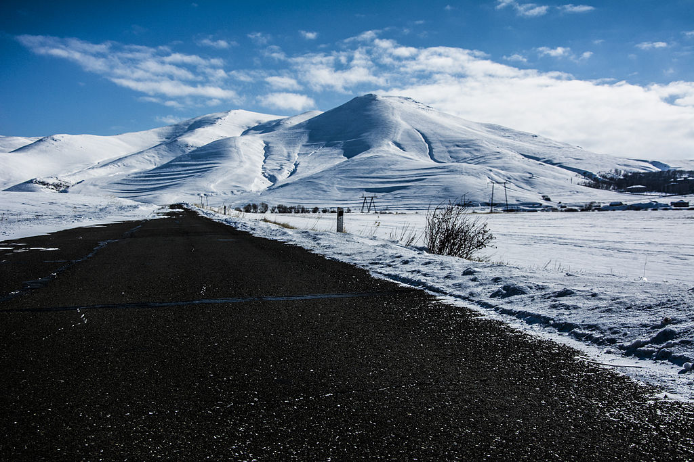

Kotayk Province
Kotayk is a province of Armenia. It is located at the central part of the country. Its capital is Hrazdan and the largest city is Abovyan. It is named after the Kotayk canton of the historic Ayrarat province of Ancient Armenia.
Kotayk is bordered by Lori Province from the north, Tavush Province from the northeast, Gegharkunik Province from the east, Aragatsotn Province from the west, and Ararat Province and the capital Yerevan from the south. Kotayk is the only province in Armenia that has no borders with foreign countries.
The province is home to many ancient landmarks and tourist attractions in Armenia including the 1st-century Temple of Garni, the medieval Bjni Fortress, 11th-century Kecharis Monastery and the 13th-century monastery of Geghard. Kotayk is also home to the popular winter sports resort and the spa-town of Tsaghkadzor and the mountain resort of Aghveran.